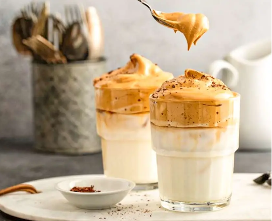
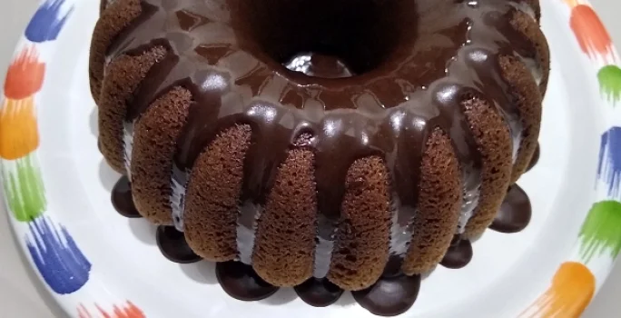

Café Expresso
Um café concentrado e saboroso, feito ao passar água quente sob alta pressão pelos grãos finamente moídos.
Ingredientes:
- 20g de café moído
- Água quente
Modo de Preparo:
- Prepare o café moendo os grãos finamente.
- Coloque o café moído em um porta-filtro.
- Despeje água quente sobre o café e deixe passar.
- Sirva imediatamente.
Capuccino Caseiro
Uma bebida que combina café , leite e normalmente polvilhada com cacau em pó.
Ingredientes:
- 500 g de leite em pó;
- 50 g de café solúvel (eu uso o extra forte);
- 8 colheres de sopa de chocolate em pó;
- 1 xícara de açúcar;
- ½ colher de sopa de bicarbonato de sódio.
Modo de Preparo:
- Para fazer a mistura, você deve ir adicionando numa tigela grande todos os ingredientes peneirando um a um, depois é só misturar tudo!
- Na hora de beber, é só adicionar a mistura em uma xícara e adicionar água fervente;
- Uma boa proporção é cobrir a metade da xícara com a mistura e completar com água. Caso goste de mais cremoso, diminua a quantidade de água, e se gosta de mais líquido, basta aumentar a proporção de água.
Café Cremoso
Muita gente gosta de um bom café cremoso, mas poucos sabem como preparar esta delícia.
Ingredientes:
- 50 gramas de café solúvel em pó;
- 2 xícaras de chá de açúcar;
- 1 xícara de chá de água fervente;
- 1 pitada de canela em pó;
- Leite fervente a gosto;
Modo de Preparo:
- Em uma tigela para batedeira, coloque todos os secos e misture;
- Com cuidado, despeje a água fervente nos secos;
- Bata, na batedeira, o creme por cerca de 10 minutos, até a massa triplicar de tamanho e ficar mais clara e cremosa;
- Para servir, coloque 2 colheres de chá do café cremoso em uma xícara e complete com leite fervente, misturando bem;

Fondue de Café
Uma deliciosa combinação de café expresso, leite, chocolate e chantilly, perfeito para um toque doce.
Ingredientes:
- ½ copo de açúcar de confeiteiro;
- 500g de chocolate de cobertura ralado;
- 2 latas de creme de leite;
- ½ copo de café passado na hora;
- ½ copo de conhaque;
Modo de Preparo:
- Junte o açúcar, o chocolate e o creme de leite e leve ao banho-maria em fogo baixo, mexendo até dissolver.
- Acrescente o café e o conhaque e mexa para dar liga.
- Passe para o rechaud com calor mínimo e sirva com frutas.

Café Gelado
Uma opção refrescante de café gelado com gelo, leite e um toque de xarope de baunilha.
Ingredientes:
- 1 xícara de café forte, resfriado
- 1/4 de xícara de leite
- Gelo
- Xarope de baunilha a gosto
Modo de Preparo:
- Prepare o café e deixe esfriar.
- Encha um copo com gelo.
- Despeje o café resfriado sobre o gelo.
- Adicione o leite e o xarope de baunilha.
- Misture bem e sirva imediatamente.

Bolo de Chocolate
Receita de Bolo de Café deliciosa feita com NESCAFÉ e chocolate CHOCOLATERIA NESTLÉ em pó
Ingredientes
- 3 ovos
- 1 xícara (chá) de óleo
- 1 xícara (chá) e meia de açúcar refinado
- 1 xícara (chá) de água quente
- 6 colheres (sopa) de NESCAFÉ® solúvel Matinal
- Meia xícara (chá) de chocolate em pó NESTLÉ® CHOCOLATERIA®
- 2 xícaras (chá) de farinha de trigo peneirada
- 1 colher (chá) de fermento em pó
Modo de Preparo:
- Em um liquidificador, bata os ovos, o óleo e o açúcar.
- Coloque a mistura em um bowl, acrescente o Nescafé, o chocolate em pó CHOCOLATERIA e a água quente, mexa com um fuet, acrescente a farinha e continue mexendo para incorporar ar, em seguida o fermento em pó.
- Despeje em uma forma untada (24 por 10) forma de pudim.
- Levar ao forno médio-baixo (180°C), pré-aquecido, por cerca de 45 minutos, fazendo o teste do palito.
- Sirva a seguir.